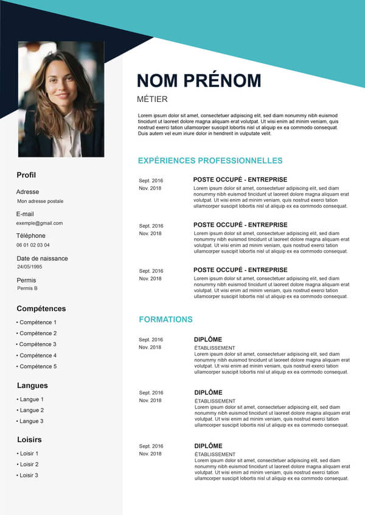
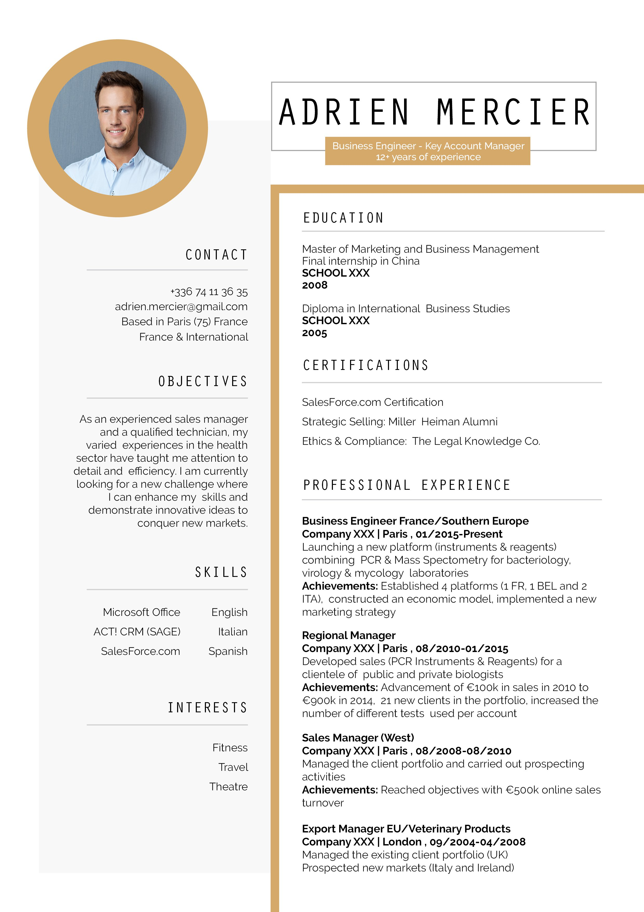
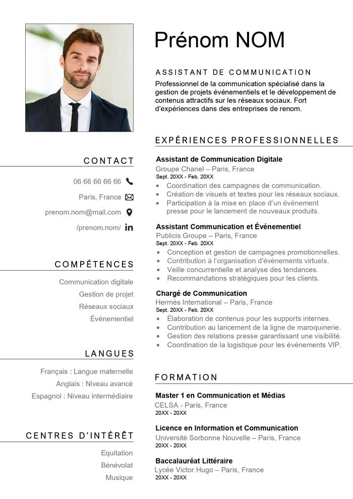
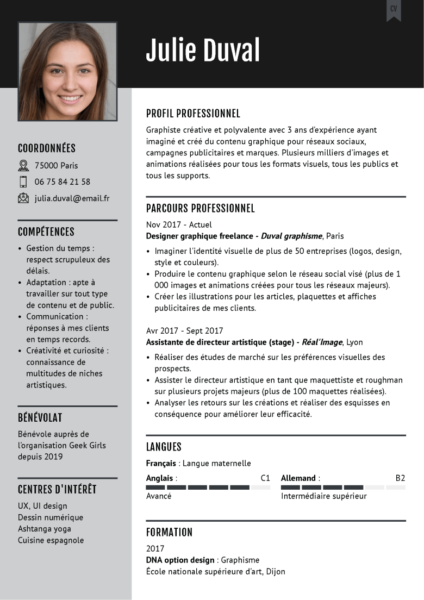
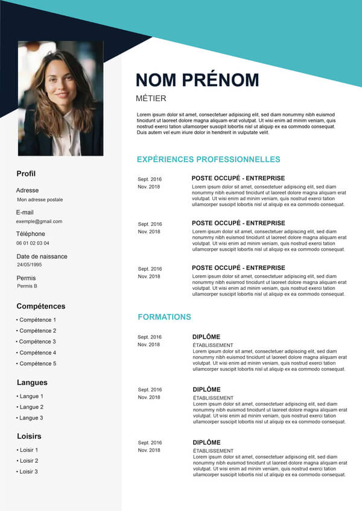
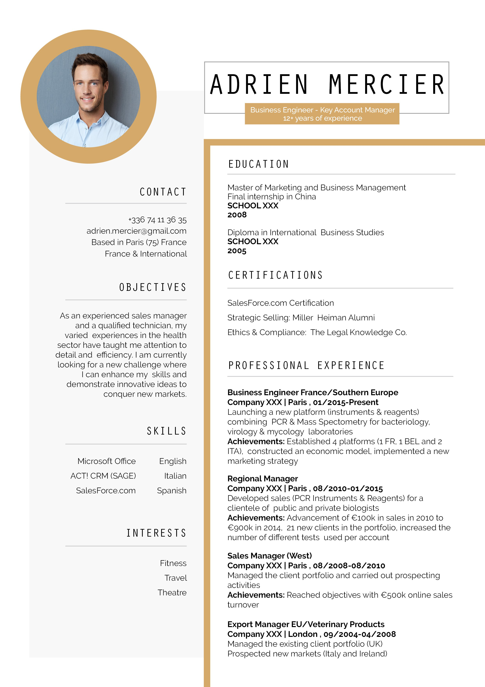
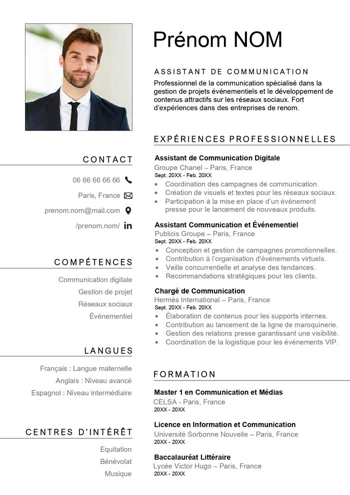
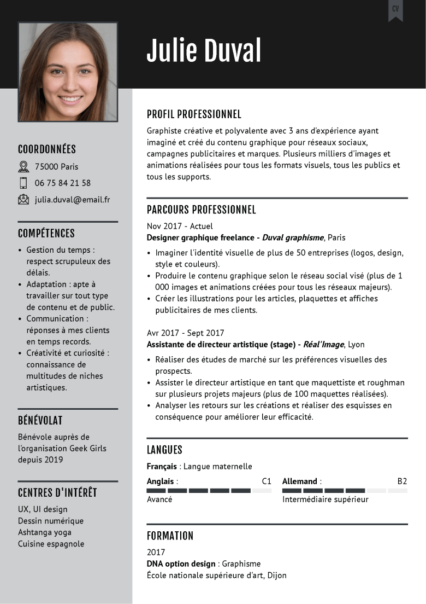

Imaginez un instant que vous êtes à la recherche de nouvelles opportunités
professionnelles. Vous avez un parcours, des compétences, mais vous avez
besoin d'un CV qui reflète parfaitement votre potentiel. WebNova est là pour ça.
Ce site innovant vous permet de créer et personnaliser votre CV de manière
interactive, avec une interface simple et intuitive. Pourquoi utiliser WebNova?
Parce qu'il simplifie la création de votre CV, vous faisant gagner du temps
tout en vous offrant des outils puissants pour un résultat à la hauteur de vos
ambitions.
Créez votre CV en trois étapes.
Qu'est ce qu'un CV?
Que contient un CV?
Comment faire un CV?
Conseils pour la rédaction d'un CV
Quelles sont les avantages d'utiliser le site WebNova?
Comment changer mon modèle?
Comment importer mon CV?
Comment telecharger mon CV?
Comment puis-je supprimer une partie de mon CV?
Rejoignez des milliers de personnes qui ont déjà crée leurs CV avec nous.


 






